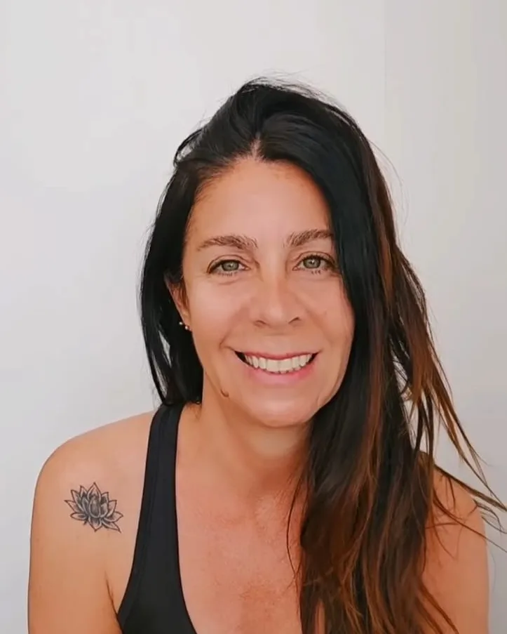
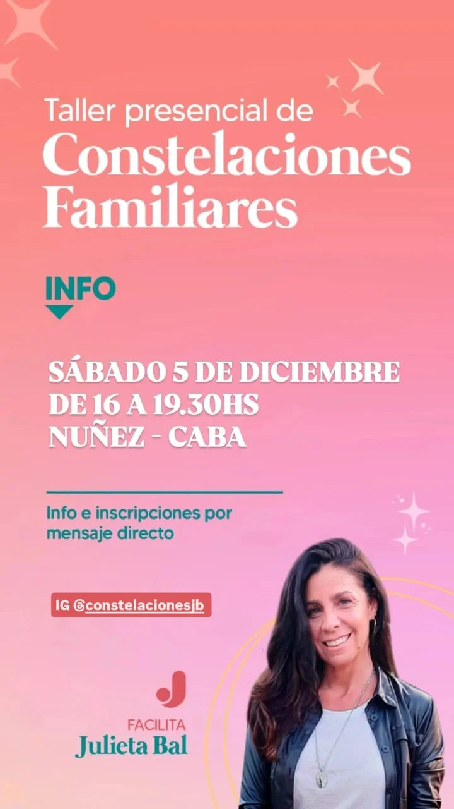

Taller presencial · BienestarUn espacio para mirar lo que quedó pendiente en nuestra historia familiar, liberarlo y recuperar nuestro propio lugar.

Son espacios donde nos encontramos a ver, desde una mirada espiritual, aquello que quedó pendiente o interrumpido en nosotros o en alguna generación anterior, y que hoy no nos deja avanzar hacia nuestra propia vida.
En nuestro sistema familiar se guardan historias y memorias de mucho dolor que no conocemos, pero de las que somos parte sin saberlo. Por lealtad a nuestros ancestros nos implicamos en sus tramas; al permitir que salga a la luz, lo no resuelto se libera.
Así logramos destrabar aquello en lo que estábamos enredados, tomar la fuerza para ocupar nuestro lugar y recuperar la paz y el alivio en cada miembro del clan.
“Se trata de unir lo que estaba separado.”
Bert HellingerLa información y las inscripciones las gestiona directamente Julieta.
Pre-inscribirme